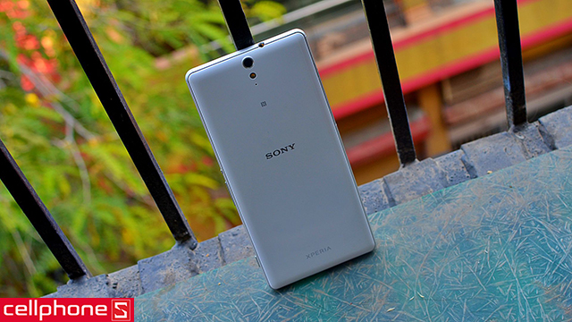
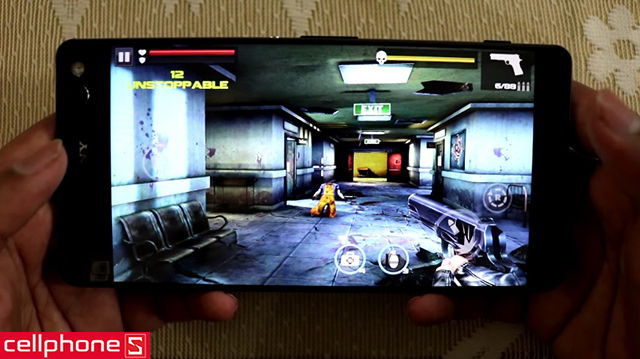
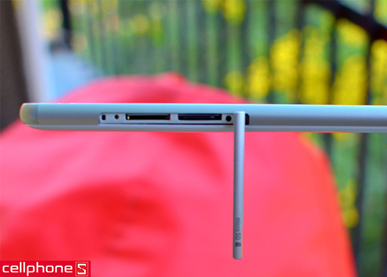
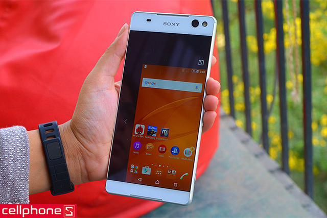
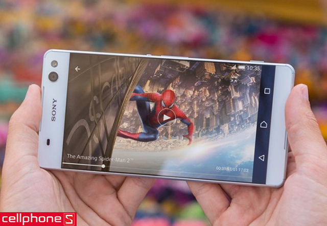
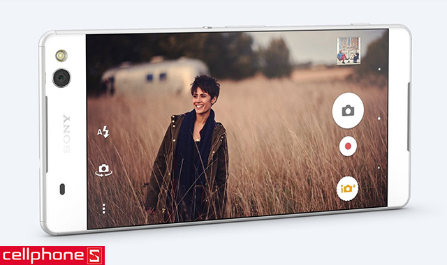

Tìm Kiếm
VuongDiQuyen.com

Giá : Liên Hệ(tạm hết hàng)
1 áo sony
có cơ hội đi 1 chuyến du lịch ma-rốc
nhanh tay...!!!
Sony Xperia C5 Ultra Dual là chiếc smartphone hiếm hoi được trang bị màn hình 6 inch và 2 camera có chất lượng gần như tương đương nhau, giúp người dùng lưu lại những khoảnh khắc trong cuộc sống một cách đầy ấn tượng.
Thiết kế Sony Xperia C5 Ultra Dual: nổi bật với viền màn hình siêu mỏng
Điện thoại Sony Xperia C5 Ultra Dual có thiết kế “sexy” với viền màn hình được làm rất mỏng, gần không tồn tại (0.8 mm), đạt tỷ lệ hiển thị ở mặt trước lên đến 76,08%. Kết hợp cùng bộ khung kim loại chắc chắn, thiết bị để lại ấn tượng ngay từ cái nhìn đầu tiên

Bên cạnh đó, mặt lưng được bo cong nhẹ về phía hai cạnh bên, giúp người dùng thuận tiện khi cầm nắm và trải nghiệm…
Hiệu năng Sony Xperia C5 Ultra Dual đáp ứng tốt nhu cầu
Xperia C5 Ultra Dual sử dụng con chip Mediatek MT6752 tám nhân xung nhịp 1.7 GHz cùng RAM 2 GB. Cấu hình này đủ để máy thao tác mượt mà các ứng dụng hằng ngày, xử lý tốt các phần mềm văn phòng và chơi được những game yêu cầu đồ họa cao.

Bên cạnh đó, C5 Ultra Dual cũng hỗ trợ mở rộng bộ nhớ lên đến 256 GB bằng khe cắm thẻ nhớ microSD.
Sony Xperia C5 Ultra Dual hỗ trợ 2 sim

Chiếc phablet của Sony hỗ trợ cắm cùng lúc 2 sim, qua đó người dùng có thể sử dụng một sim chuyên liên lạc, một sim chuyên giải trí thông qua kết nối mạng 3G/4G để tối ưu hóa lưu lượng dữ liệu và tiết kiệm chi phí hằng tháng.
SonyXperia C5 Ultra Dual có chế độ sử dụng một tay

Đôi khi bạn cảm thấy thao tác trên màn hình 6 inch của Xperia C5 Ultra Dual là hơi bất tiện? Chỉ cần thực hiện một việc đơn giản vuốt từ phía dưới màn hình lên, cửa sổ màn hình sẽ được thu nhỏ và bạn có thể tiếp tục trải nghiệm một cách thoải mái.
Màn hình Sony Xperia C5 Ultra Dual: trải nghiệm giải trí đa phương tiện ấn tượng
Xperia C5 Ultra Dual sở hữu màn hình lên đến 6 inch với độ phân giải Full HD mang lại những khung hình có độ chi tiết rất cao.

Màu sắc cũng được tái tạo trung thực nhờ tấm nền IPS LCD, nhờ vậy, trải nghiệm thị giác khi lướt web, xem phim hay chơi game giải trí của người dùng đều trở nên rất ấn tượng.
Camera Sony Xperia C5 Ultra Dual: hoàn hảo cho cả trước và sau
Cả 2 camera của Xperia C5 Ultra Dual đều có độ phân giải 13 MP, sử dụng cảm biến Exmor RS cao cấp của Sony, tích hợp tính năng tự động lấy nét và đèn flash LED trợ sáng cùng khả năng quay video Full HD, giúp người dùng dễ dàng ghi lại những khoảnh khắc trong cuộc sống theo một phong cách riêng.

Sony Xperia C5 Ultra Dual Chính hãng với những ưu điểm nổi bật về thiết kế, màn hình và như camera rất được người dùng ưa chuộng. Hệ thống bán lẻ di động toàn quốc CellphoneS rất hân hạnh mang đến cho khách hàng những mẫu điện thoại Xperia C nói riêng và của Sony nói chung với giá bán hấp dẫn, chế độ bảo hành chu đáo và nhiều dịch vụ tiện ích.
3G: HSPA 42.2/5.76 Mbps
4G: LTE Cat4 150/50 Mbps
SIM: 2 SIM (Nano-SIM)
Kích thước: 164.2 x 79.6 x 8.2 mm (6.46 x 3.13 x 0.32 in)
Trọng lượng: 187 g (6.60 oz)
Màn hình: Cảm ứng điện dung IPS LCD, 16 triệu màu
Kích thước màn hình: 1080 x 1920 pixels, 6.0 inches (~367 ppi mật độ điểm ảnh)
Bộ nhớ trong: 64 GB, 4 GB RAM
Khe cắm thẻ nhớ: microSD, lên đến 256 GB
WLAN: Wi-Fi 802.11 a/b/g/n/ac, dual-band, Wi-Fi Direct, hotspot
Bluetooth: v5.0, A2DP, LE, aptX
USB: v3.1, Type-C 1.0
NFC: Có
GPS: A-GPS, GLONASS, BDS, GALILEO
Hệ điều hành: Android OS, v5.0 (Lollipop)
Chipset: Mediatek MT6752
CPU: Octa-core 1.7 GHz Cortex-A53
GPU: Mali-T760MP2
Bộ cảm biến: Gia tốc, la bàn, khoảng cách
Camera chính: 13 MP, f/2.0, 25mm, tự động lấy nét, LED flash
Camera phụ: 13 MP, f/2.2, 22mm, tự động lấy nét, LED flash; 1080p@30fps
Video: 1080p@30fps, HDR
Pin: Li-Ion 2930 mAh
Thời gian đàm thoại: 23 giờ (3G)
Thời gian chờ: -
Thời gian chơi nhạc: -
Liên Hệ
trụ sở chính: Redmond, Washington, Hoa Kỳ
phone: 123456789
Góp Ý
email:anhhungxadieu@gmail.com
Đối Tác
điện máy đỏ
thới giới vận động
viên thông B